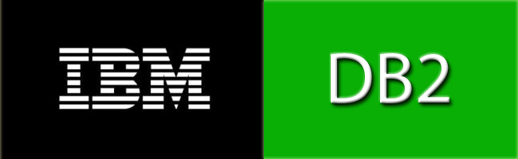
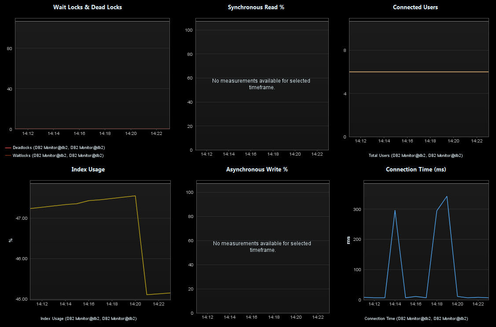
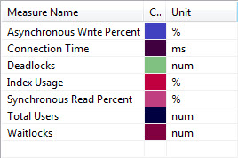

The DB2 plugin enables monitoring behavior metrics provided in a DB2 database.The plugin uses JDBC to connect to the DB2 Database and queries key performance metrics. Having these measures in dynaTrace enables quick correlation of database related performance issues such as high I/O or too many database connections to application transaction performance problems such as long running transactions or slow database queries.
Since this plugin is currently in BETA, please follow the best practice of having a separate collector for your monitoring plugins.
|
Plug-In Files |
dynaTrace 4.x+: |
|
Author |
Eric Burns (Eric.burns@compuware.com) |
|
dynaTrace Versions |
4.1+ |
|
License |
|
|
Support |
|
|
Known Problems |
|
|
Release History |
2012-07-12 0.8.0 Initial BETA Release |
The following image shows the metrics that the monitor provides:

The monitor requires the following configuration settings:
hostName: Host name of the DB2 Database Instance
dbName: Database Instance Name (SID) or Service name
dbUsername: Username that is used to access the database. User may needs to have query rights to a specific tables
dbPassword: Password that is used to access the database
dbPort: DB2 Database Port for JDBC Connections (default: 50001)
Import the Plugin into the dynaTrace Server via the dynaTrace Server Settings menu -> Plugins -> Install Plugin. For details how to do this please refer to the dynaTrace documentation.
To use the provided dashboard please leave the default name of the Monitor as "RepositoryDB", then open the Dashboard and set the Data Source accordingly.
This plugin accesses the following tables, so it must be able to connect and have SELECT privileges:
sysibmadm.applications
sysibmadm.snapdb
This release is very much in Beta. Please send feedback and help to improve it.
Metric Groups will be changed/altered in a later release. Would like input from DB2 DBAs.